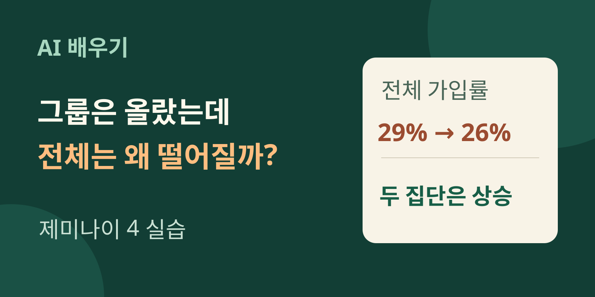
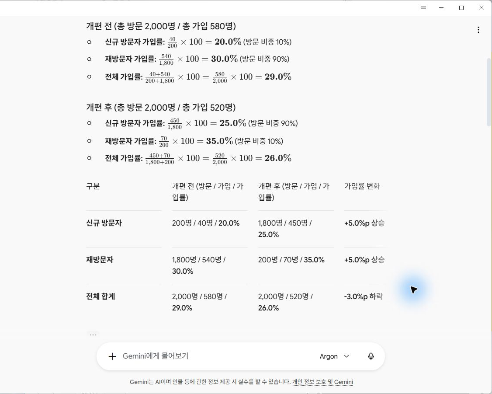
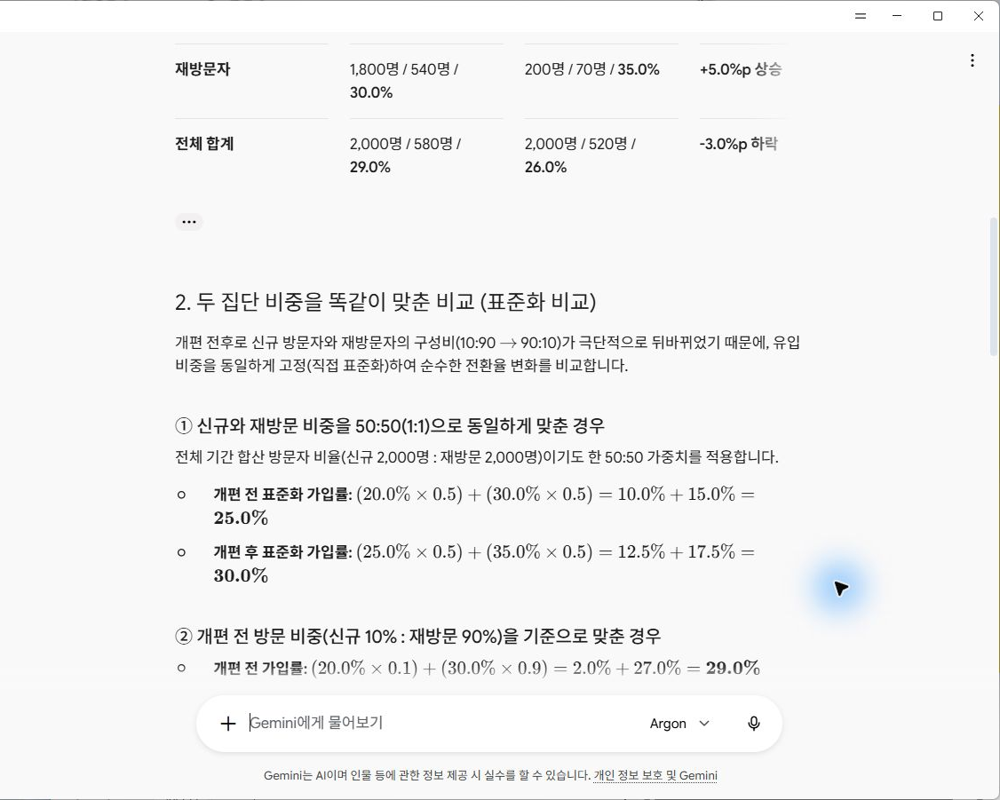
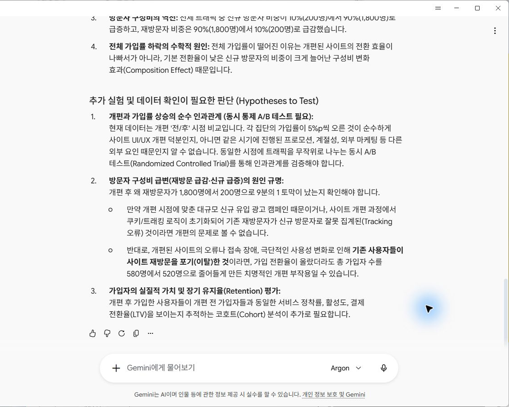
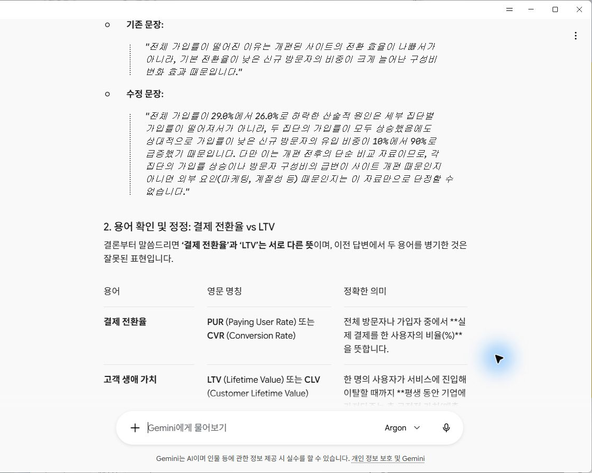
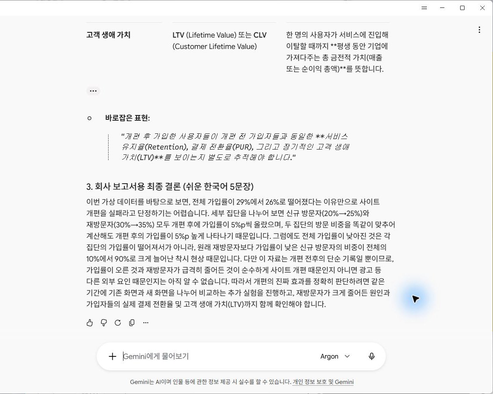
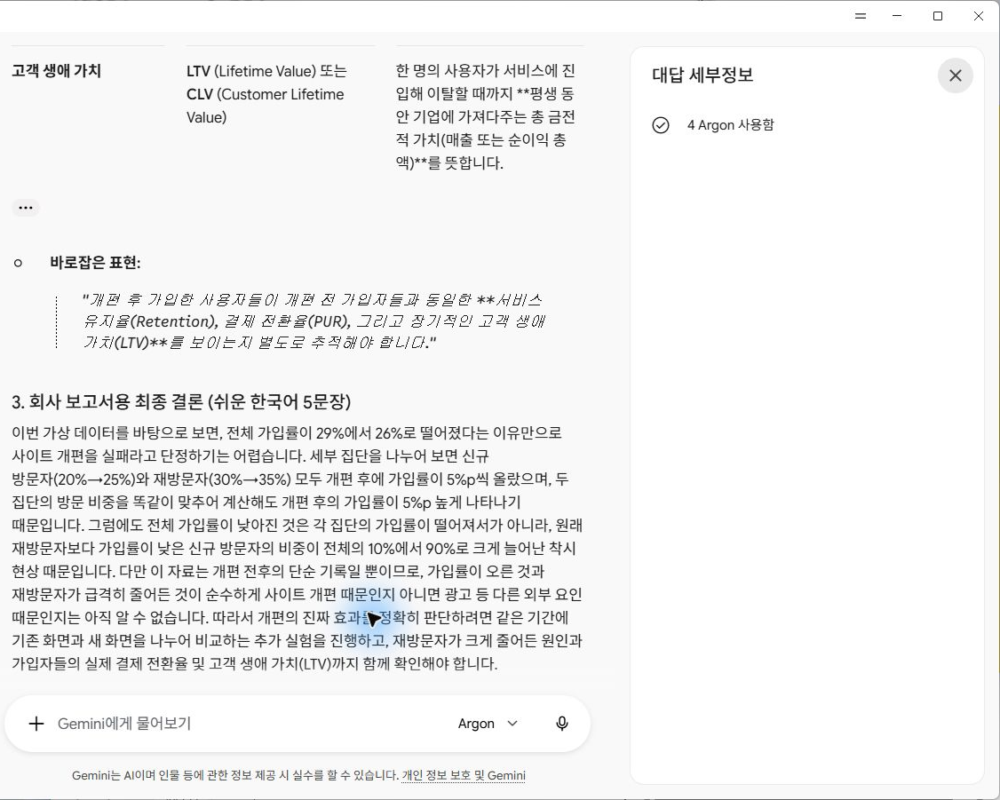

제미나이 4로 숫자 보고서 읽기: 가입률은 왜 엇갈렸을까
전체 가입률은 29%에서 26%로 떨어졌는데, 신규 방문자와 재방문자의 가입률은 각각 올랐다. 구글의 AI인 제미나이 4 Argon에 이 가상 자료를 직접 넣어 분석을 부탁했다. 계산은 맞았지만, 사이트 개편의 효과를 설명하는 문장과 업무 용어에는 오류가 있었다. 숫자 네 줄을 넣는 것부터 계산을 확인하고 보고서 결론을 고치는 과정까지 함께 따라가 보자.

완성할 것은 표 한 장과 근거가 분명한 결론이다
이번 수업에서는 엑셀 파일이나 코드를 먼저 만들지 않는다. 짧은 숫자 자료를 채팅에 붙여 넣고, 제미나이가 만든 계산표를 원자료와 대조한다. 마지막에는 회사 보고서에 옮겨 쓸 수 있는 다섯 문장으로 정리한다. 회사의 실제 고객 정보나 매출은 쓰지 않고 공개 가능한 가상 숫자만 사용한다.
먼저 도착할 결과를 보자. 전체 가입 수는 580에서 520으로 줄었다. 반면 신규의 가입률은 20%에서 25%, 재방문의 가입률은 30%에서 35%로 올랐다. 두 문장은 동시에 참이다. 이 차이를 이해하면 ‘평균이 떨어졌다’는 한 줄만 보고 업무의 성공과 실패를 성급하게 결정하는 일을 줄일 수 있다.
아래는 실제로 받은 첫 계산 결과다. 화면 속 표가 그럴듯해 보이는지보다, 입력한 네 줄이 정확히 반영됐는지를 읽는 것이 이번 실습의 출발점이다. 캡처를 누르면 큰 이미지로 열 수 있다.

채팅을 열고 숫자 네 줄을 붙여 넣기
실습에서는 Windows용 Gemini 앱의 새 채팅을 열었다. 입력창 아래에서 ‘채팅’을 선택하고, 입력창 오른쪽의 모델 메뉴에서 Argon을 골랐다. 아래 입력문을 붙인 다음 오른쪽의 위쪽 화살표 버튼을 눌러 보냈다. 이번 분석은 일반 채팅에서 했으며, 앱이나 문서를 만드는 Canvas를 켤 필요는 없었다.
모델 메뉴에 Argon이 보이지 않으면 같은 환경으로 실습하고 있다고 가정하지 말자. 선택 가능한 모델은 계정과 제공 상황에 따라 다르므로 구글의 모델 안내와 내 화면을 함께 확인하면 된다. 여기서 다루는 것은 실제로 ‘4 Argon 사용함’을 확인한 두 응답이다.
입력 자료는 다음 네 줄이다. ‘신규’는 처음 방문한 쪽, ‘재방문’은 다시 방문한 쪽으로 구분한 연습이다. 현실의 자료를 분석할 때는 같은 사람이 여러 번 방문한 경우를 어떻게 세는지까지 정해야 하지만, 이번에는 아래에 주어진 방문 수와 가입 수로만 계산한다.
| 시점 | 구분 | 방문 수 | 가입 수 |
|---|---|---|---|
| 개편 전 | 신규 | 200 | 40 |
| 개편 전 | 재방문 | 1,800 | 540 |
| 개편 후 | 신규 | 1,800 | 450 |
| 개편 후 | 재방문 | 200 | 70 |
다음은 가상 사이트 개편 전후의 방문과 가입 수입니다.
전/신규: 방문 200, 가입 40
전/재방문: 방문 1800, 가입 540
후/신규: 방문 1800, 가입 450
후/재방문: 방문 200, 가입 70
“전체 가입률이 떨어졌으니 개편은 실패다”라는 판단을 검토해 주세요.
전체와 각 집단의 가입률, 두 집단 비중을 똑같이 맞춘 비교를 계산식과 함께 보여 주세요.
자료로 확인되는 사실과 추가 실험이 필요한 판단을 구분해 주세요.입력문은 세 가지 일을 나눠 요청한다. 먼저 전체와 집단별 값을 계산하고, 다음으로 집단의 비중을 같게 맞춰 비교하고, 마지막으로 사실과 원인에 대한 판단을 구분한다. ‘이 자료를 분석해 줘’보다 원하는 결과와 검사할 기준이 분명하다. 그래도 답변의 모든 문장이 정확해지는 것은 아니어서 뒤에서 직접 확인했다.
첫 검산은 가입 수를 더한 뒤 나누는 것부터
이번 자료의 가입률은 가입 수 ÷ 방문 수 × 100이다. 개편 전에는 40과 540을 더해 가입 수 580, 200과 1,800을 더해 방문 수 2,000을 얻는다. 580을 2,000으로 나누면 0.29이므로 29%다. 개편 후에도 같은 순서로 계산하면 520 ÷ 2,000 = 26%가 된다.
집단별로도 한 줄씩 나눠 보자. 신규는 40 ÷ 200 = 20%, 450 ÷ 1,800 = 25%다. 재방문은 540 ÷ 1,800 = 30%, 70 ÷ 200 = 35%다. 제미나이의 표와 이 계산이 일치했다. 계산기를 켜고 이 중 한 줄만 직접 확인해도 AI가 분모나 시점을 뒤바꿨는지 검사하는 방법을 익힐 수 있다.
전체는 하락, 두 집단은 상승
회색: 개편 전 · 초록: 개편 후. 모든 막대는 같은 0~40% 눈금이다.
전체 가입률
신규 방문자 가입률
재방문자 가입률
29%에서 26%가 된 차이는 3%포인트, 줄여서 3%p다. 비율끼리 뺀 차이를 나타내는 단위다. 보고서에 ‘3% 감소’라고 적으면 처음 값에 비해 얼마나 줄었는지를 뜻하는 상대적 감소율과 혼동된다. 이번에는 ‘가입률 3%포인트 하락, 가입 수 60 감소’라고 구분해 적으면 명확하다.
평균을 움직인 것은 방문자의 구성이다
집단별 가입률은 둘 다 올랐는데 전체가 떨어진 이유는 방문 구성에서 찾을 수 있다. 개편 전 신규 방문은 전체 2,000 중 200이므로 10%였다. 개편 후에는 1,800이므로 90%다. 재방문 비중은 반대로 90%에서 10%로 바뀌었다. 이 자료에서 가입률이 상대적으로 낮은 신규 쪽이 전체에서 훨씬 큰 몫을 차지하게 된 것이다.
처음 온 방문의 비중이 10%에서 90%로
초록: 신규 · 회색: 재방문. 한 막대는 해당 시점의 전체 방문 100%다.
전체 가입률은 두 집단의 비율을 단순히 더해서 둘로 나눈 값이 아니다. 더 많이 방문한 집단의 비율이 전체 평균에 더 크게 반영된다. 개편 전은 20% × 10% + 30% × 90% = 29%, 개편 후는 25% × 90% + 35% × 10% = 26%다. 여기서 뒤에 곱한 10%와 90%는 가입률이 아니라 방문 비중이다.
숫자 두 종류를 구분하면 ‘둘 다 올랐는데 전체는 왜 떨어졌지’라는 의문이 풀린다. 집단별 가입률과 집단의 크기가 함께 움직였기 때문이다. 그렇다고 전체 감소가 사라지는 것은 아니다. 실제로 주어진 전체 가입 수는 60 줄었고, 전체 가입률도 3%포인트 내려갔다.
50:50 비교는 같은 조건을 가정한 별도 계산
제미나이는 신규와 재방문을 반반으로 맞춘 비교도 내놓았다. ‘두 시점 모두 신규와 재방문이 50%씩이었다면’이라는 가정을 붙인 계산이다. 구성 차이를 잠시 고정하고 집단별 가입률의 변화를 읽기 위해 사용한다. 이런 식으로 비교 기준을 맞추는 일을 표준화라고 부른다.
| 비교 방식 | 개편 전 | 개편 후 |
|---|---|---|
| 자료에 있는 실제 전체 가입률 | 580 ÷ 2,000 = 29% | 520 ÷ 2,000 = 26% |
| 신규·재방문을 50:50으로 가정 | 20% × 0.5 + 30% × 0.5 = 25% | 25% × 0.5 + 35% × 0.5 = 30% |

보고서에는 두 종류의 숫자를 나란히 남긴다. 실제 전체 가입률 29%→26%를 지우고 25%→30%만 써 놓으면 실적이 좋아진 것처럼 오해하기 쉽다. 50:50은 이번 비교를 위해 정한 기준이다. 모든 업무에서 반드시 반반을 써야 하는 규칙도 아니다. 중요한 것은 어떤 비중을 가정했는지 밝혀 두는 일이다.
숫자는 맞아도 ‘개편 덕분’이라는 결론은 별도 문제다
이제 표 아래의 설명을 읽어 보자. 첫 응답에는 추가 실험이 필요하다는 설명이 있었다. 그런데 다른 부분에는 전체 가입률이 내려간 이유가 ‘개편된 사이트의 전환 효율이 나빠서가 아니라’는 문장도 있었다. 개편이 나쁜 영향을 주었을 가능성을 이미 배제한 듯한 표현이다.
이번 자료에는 개편 전후의 숫자만 있다. 그사이 광고, 방문 경로, 계절, 측정 방식이 달라졌는지는 들어 있지 않다. 신규와 재방문 안에서도 들어온 사람의 특성이 바뀌었을 수 있다. 따라서 집단별 가입률이 오른 이유를 개편 덕분이라고 확정할 수 없고, 전체 하락을 개편 탓이라고 확정할 수도 없다.
또 하나의 문제는 ‘결제 전환율(LTV)’이라는 표기였다. 결제 전환율은 정해진 대상 중 결제로 이어진 비율이다. LTV는 고객과 거래하는 전체 기간에 걸친 금전적 가치를 다루는 개념으로, 결제 비율과 같은 말이 아니다. 애초에 이번 네 줄에는 결제나 장기 고객가치를 계산할 자료가 없다.

이 장면에서 배울 것은 AI를 아예 쓰지 말자는 이야기가 아니다. 계산 확인과 문장 확인을 나눠 하면 된다. ‘때문이다’, ‘덕분이다’, ‘실패다’처럼 원인을 확정하는 말에 표시하고, 입력 자료가 그 원인까지 보여 주는지 묻는다. 낯선 전문용어는 원자료와 관계가 있는지, 서로 다른 뜻을 섞지 않았는지 살펴본다.
문제 문장을 짚어 같은 채팅에서 고치기
수정할 때는 새 채팅으로 가지 않고, 분석 결과가 나온 채팅의 아래 입력창에 다음 문장을 보냈다. 맞은 계산은 유지하고 잘못된 설명만 고치도록 범위를 나눴다. 어느 문장이 어떤 오해를 만드는지 알려 주고, 보고서에 사용할 결과물의 길이도 다섯 문장으로 정했다.
수치는 검산해 보니 맞습니다. 다만 “개편된 사이트의 전환 효율이 나빠서가 아니라”는 문장은 개편의 인과효과가 확인된 것처럼 읽힙니다. 전후 자료만으로 개편 덕분 또는 탓이라고 단정할 수 없도록 고쳐 주세요. 그리고 “결제 전환율(LTV)”에서 LTV는 결제 전환율과 같은 뜻인가요? 이 용어도 확인해서 바로잡아 주세요. 회사 보고서에 넣을 최종 결론을 쉬운 한국어 5문장으로 다시 써 주세요. 가상 데이터라는 점을 유지해 주세요.실제 교정 응답은 전후 자료만으로 개편의 인과효과를 단정할 수 없다고 정리했고, 결제 전환율과 LTV를 같은 뜻처럼 연결한 오류도 인정하고 고쳤다. 여기서 인과효과는 ‘개편이라는 변화가 가입률을 얼마나 바꾸었는가’라는 뜻이다. 변화가 동시에 일어났다는 기록만으로는 그 크기와 방향을 확정할 수 없다.

제미나이가 제안한 추가 A/B 실험은 같은 기간에 이용자를 나눠 이전 화면과 새 화면을 비교하는 방법이다. 가능하면 무작위로 배정해 비교 대상의 차이를 줄인다. 이번 실습에서 그런 실험까지 수행한 것은 아니다. 회사에서 실제 개편 효과를 알고 싶다면 먼저 측정 기준과 실험 설계를 정할 일이 남는다.
교정된 다섯 문장에도 ‘착시’라는 표현은 남아 있었다. 방문 구성이 달라져 전체와 집단별 방향이 엇갈린 현상을 설명하려는 말이지만, 읽는 사람은 감소 자체가 없었다고 받아들일 수 있다. 그래서 최종 보고서에는 실제 감소를 첫 문장에 두고, 구성 변화와 원인 판단의 한계를 뒤에 설명했다.

보고서에 남길 다섯 문장
아래는 실습 결과와 교정 취지를 반영해 편집부가 다시 쓴 예시다. 제미나이의 답변을 그대로 인용한 것이 아니다. 실제로 관측된 값, 비교를 위한 가정, 아직 알 수 없는 원인 순서로 읽히도록 다듬었다.
이 가상 자료에서 전체 가입률은 29%에서 26%로 떨어졌고, 가입 수는 580에서 520으로 줄었습니다.
신규와 재방문의 가입률은 각각 20%에서 25%, 30%에서 35%로 올랐습니다.
동시에 신규 방문 비중이 10%에서 90%로 커졌으며, 두 집단을 50:50으로 맞춰 계산하면 가입률은 25%에서 30%로 올라갑니다.
이 전후 자료만으로 변화가 개편 덕분인지 또는 개편 탓인지 단정할 수는 없습니다.
개편의 효과를 판단하려면 적절한 A/B 실험을 검토하고, 유입 경로와 재방문 수 감소 이유 및 집계 방식도 함께 확인해야 합니다.
다섯 문장을 외울 필요는 없다. 첫째, 실제 값이 어떻게 달라졌는지 적는다. 둘째, 전체와 세부 집단을 나눠 적는다. 셋째, 가정한 계산에는 가정이라고 표시한다. 마지막으로 원인을 확인하려면 어떤 자료가 더 필요한지 적는다. 이 순서가 숫자 보고서를 AI와 함께 쓰는 기본 틀이 된다.
혼자 다시 해볼 작은 연습
앞의 입력문을 새 채팅에 한 번 더 넣어 보자. 같은 모델이라도 표의 모양과 설명은 달라질 수 있다. 이번 글에서 보았던 오류가 반드시 다시 나오는 것도 아니다. 답변을 똑같이 재현하는 것이 목표가 아니라, 달라진 답변에서도 확인할 곳을 찾는 것이 목표다.
- 네 줄 대조: 전·후와 신규·재방문이 바뀌지 않았는지, 방문·가입 수가 그대로 옮겨졌는지 본다.
- 한 줄 검산: 개편 후 전체 가입률을 직접 계산한다. 정답은 (450 + 70) ÷ (1,800 + 200) × 100 = 26%다.
- 가정 찾기: 25%→30%가 나온 곳에 ‘50:50으로 가정’이라는 설명이 있는지 확인한다.
- 결론 읽기: 개편이 성공했다거나 실패했다고 단정한 문장이 있는지 읽는다. 있다면 어떤 자료가 그 판단을 뒷받침하는지 다시 묻는다.
- 수정 뒤 재확인: 잘못된 문장을 고쳤더라도 전체 29%→26%, 가입 수 580→520이 사라지지 않았는지 확인한다.
내 업무에 응용한다면, 예를 들어 전체 문의 해결률을 문의 유형별로 나눠 보는 질문부터 시작할 수 있다. 쉬운 문의와 어려운 문의의 비중이 바뀌면 전체 평균도 달라질 수 있기 때문이다. 이것은 다음 연습의 아이디어이며 이번에 직접 시험한 사례는 아니다. 실제 업무에서는 집단을 나눈 기준, 기간, 비율을 계산할 때 나누는 전체 수인 분모부터 통일하고 공개 가능한 자료로 시작하자.
이번 실습에서 직접 확인한 범위
2026년 10월 14일 Windows용 Gemini에서 자료 입력, 초기 분석, 별도 검산, 수정 요청, 교정 결과 확인까지 진행했다. 초기 분석과 교정 응답의 세부정보에서 각각 ‘4 Argon 사용함’을 확인했다. 특정 모델을 선택한 화면만 보고 모든 응답의 모델을 추정한 것이 아니라 해당 응답의 표시를 확인한 기록이다.

이 한 번의 실습은 다른 AI와 성능을 겨룬 시험도, 모든 제미나이 답변의 정확성을 보증하는 자료도 아니다. 확인한 성과는 구체적이다. 제미나이는 네 줄의 숫자에서 집단별 차이와 구성 변화를 계산했고, 사용자가 잘못된 표현을 짚자 설명을 수정했다. 사람은 원자료와 산술, 결론의 근거를 확인하는 일을 맡았다.
다음에는 제미나이 4로 예약 연습 화면을 만들고 오류 고치기에서 버튼과 입력값이 있는 결과물을 직접 시험해 볼 수 있다. 숫자 분석과 화면 제작 모두 같은 순서로 마무리한다. 완성된 결과를 보고, 원래 조건과 대조하고, 고칠 부분을 구체적으로 요청한다.
자료와 출처
- 실제로 보낸 분석 입력문 · 실제로 보낸 수정 요청문
- Analytics Vidhya의 Gemini 4 Argon 직접 실험 기사 — 가입률 비교 구조를 참고해 숫자의 규모를 바꾼 가상 연습을 만들었다. 본문의 결과 화면은 우리 실습에서 얻었다.
- 구글 Gemini 모델 안내 — 내 계정에서 선택할 모델을 확인할 때 참고한다.
- 구글 Canvas 안내 — 다음 예약 화면 수업에 사용하는 앱·문서 제작 기능의 안내다. 이번 숫자 분석에는 Canvas를 사용하지 않았다.
실제 회사·고객 자료를 사용하지 않았다. 캡처는 실제 응답을 정지 화면으로 기록한 것이며 연속 화면 녹화가 아니다. 직접 확인한 계산, AI가 처음 쓴 문장, 실제 교정 결과, 편집부가 다듬은 보고서 예시를 구분했다.
대표 그림과 본문 비율 그래프는 이 글의 가상 자료를 설명하기 위해 편집부가 직접 구성했다. 대표 그림은 Gemini 제품 화면이 아니다. 본문 앱 캡처는 2026년 10월 14일 직접 실행한 화면이다.